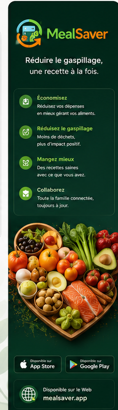

Inventaire
Voir les aliments du foyer
Recherche, catégories, quantités, lieux de stockage, dates et propriétaire de l’ajout.
Ouvrir dans la démoProduit
Cette version est structurée pour faciliter le passage du site statique vers une application complète.

Recherche, catégories, quantités, lieux de stockage, dates et propriétaire de l’ajout.
Ouvrir dans la démo
Le système propose un aliment détecté, mais l’utilisateur valide avant l’ajout final.
Tester le scan
Les recettes utilisent les aliments disponibles et ajoutent automatiquement les ingrédients manquants à la liste.
Voir les recettes